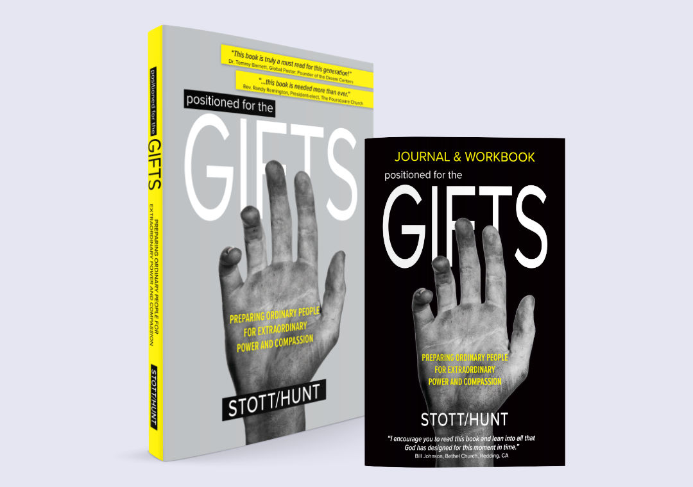
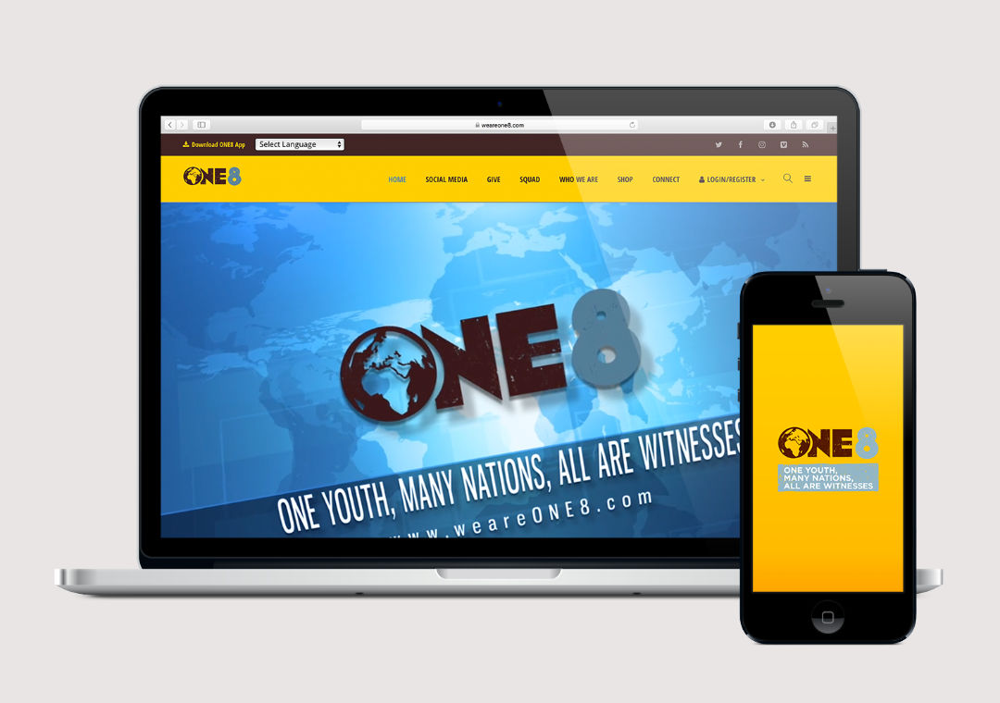

Book Design: Positioned for the Gifts
Developed the cover and interior layout for a 380-page book, integrating chapter breaks and footnotes. Produced a 96-page saddle-stitched companion workbook to support the main text.

Marketing Collateral: Coin Box
Designed cube piggy bank and die cut for coin collection for a charitable organization.

Web Design: ONE8 Website
Conceptualized clean, modern website layouts tailored for youth engagement.
Magazine and Social Media: GlobaLee
Created a 16-page magazine and video to showcase a glimpse of the magazine on social media.